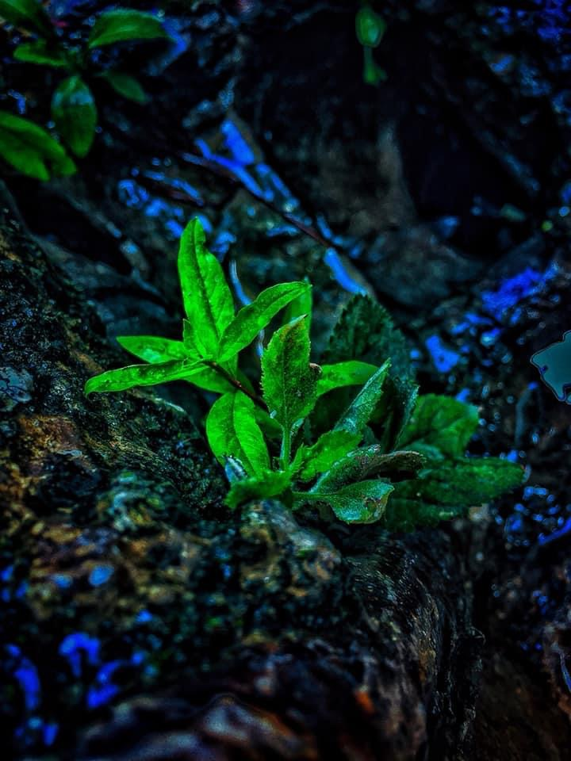
Discover Real Corbett
Authentic Escapes
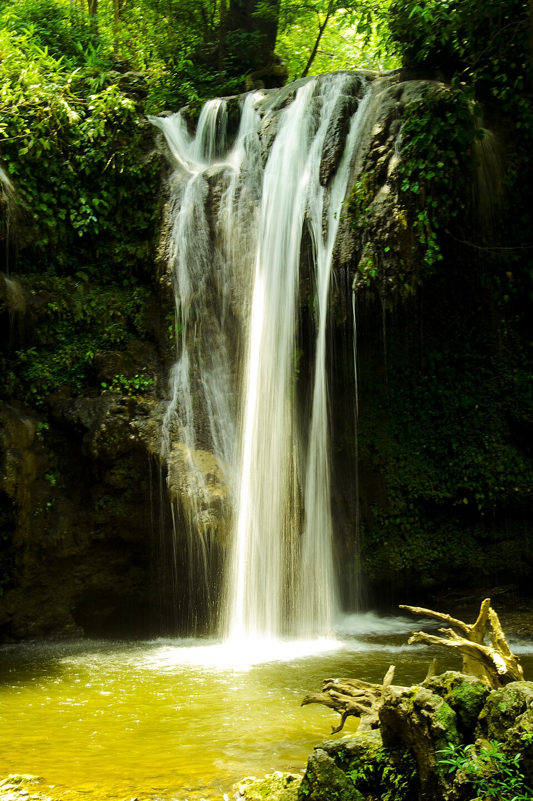
Corbett Falls
A scenic 20-meter waterfall surrounded by dense teak forest. Located 25 km from Ramnagar, offering a serene atmosphere perfect for nature walks.
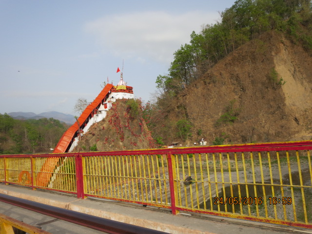
Garjiya Devi Temple
Sacred shrine perched atop a large rock in the Kosi River. A beautiful site offering stunning riverside views and spiritual calm.
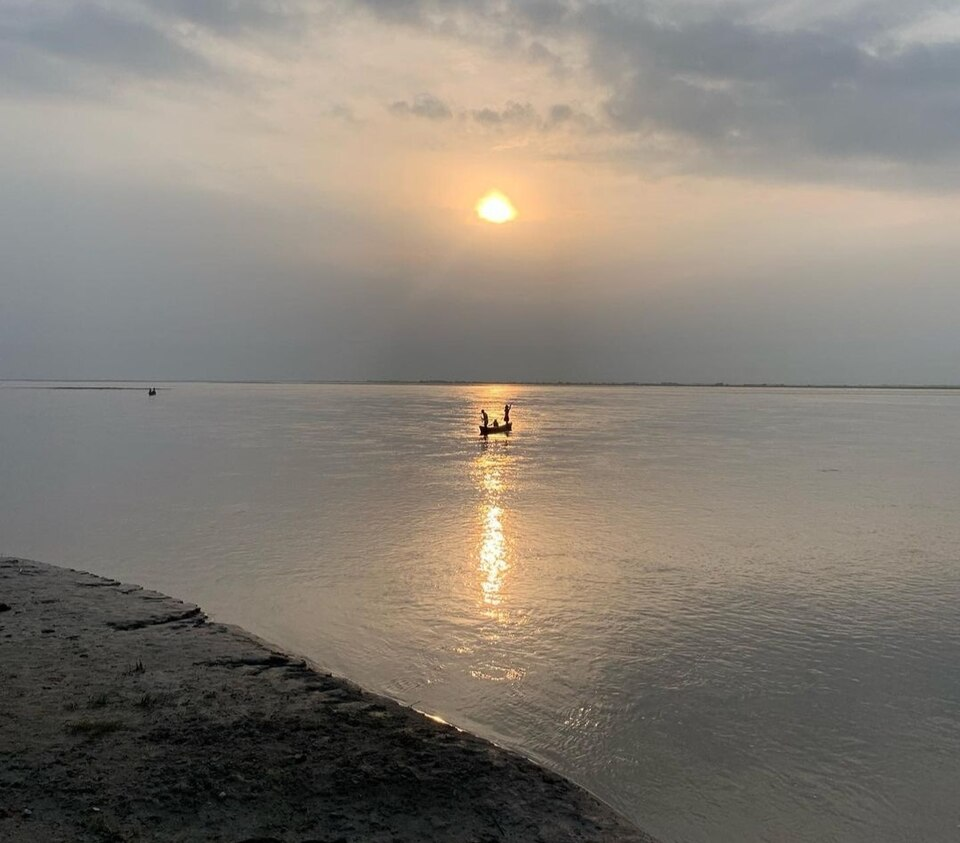
Kosi Riverside
The lifeline of Corbett. Experience calming sunset walks, birdwatching, and riverside moments along the boulder-strewn banks.
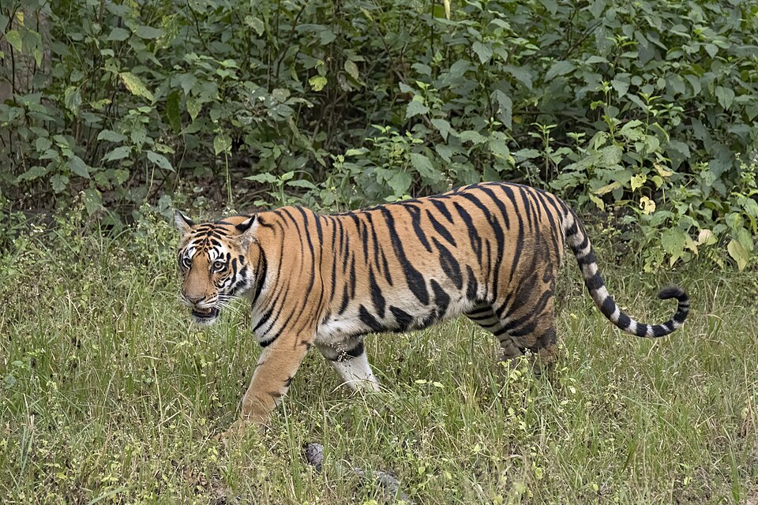
Tiger Tracking
Experience the thrill of spotting the Royal Bengal Tiger in its natural habitat across the various safari zones of Corbett.
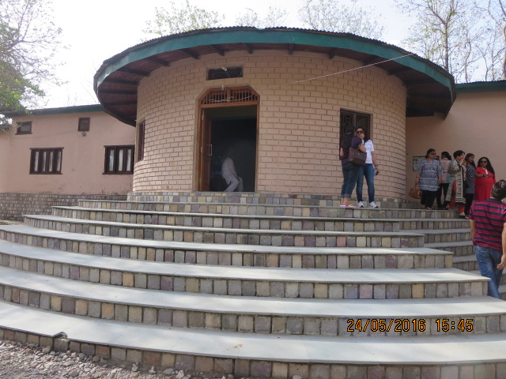
Corbett Museum
Located at the Aamdanda entry gate of Dhikala, this museum preserves the legacy of Jim Corbett with his personal belongings, letters, and rare photographs.
Hover to pause • Authentic real photography
Experiential luxury escapes outside Corbett's safari zones
From riverside Shakti calm and premium adventure energy to rooftop bungee thrills and curated night sky experiences, these highlights are designed for travelers seeking authentic luxury outside the core park zones.
Garjiya Devi Temple + Kosi Riverside
Sacred riverside calm outside the safari boundary.
About 14 km from Ramnagar on Ranikhet Road, this rock temple sits on the Kosi with cafés, short walks, riverside stays, bonfire camping and sunset photography.
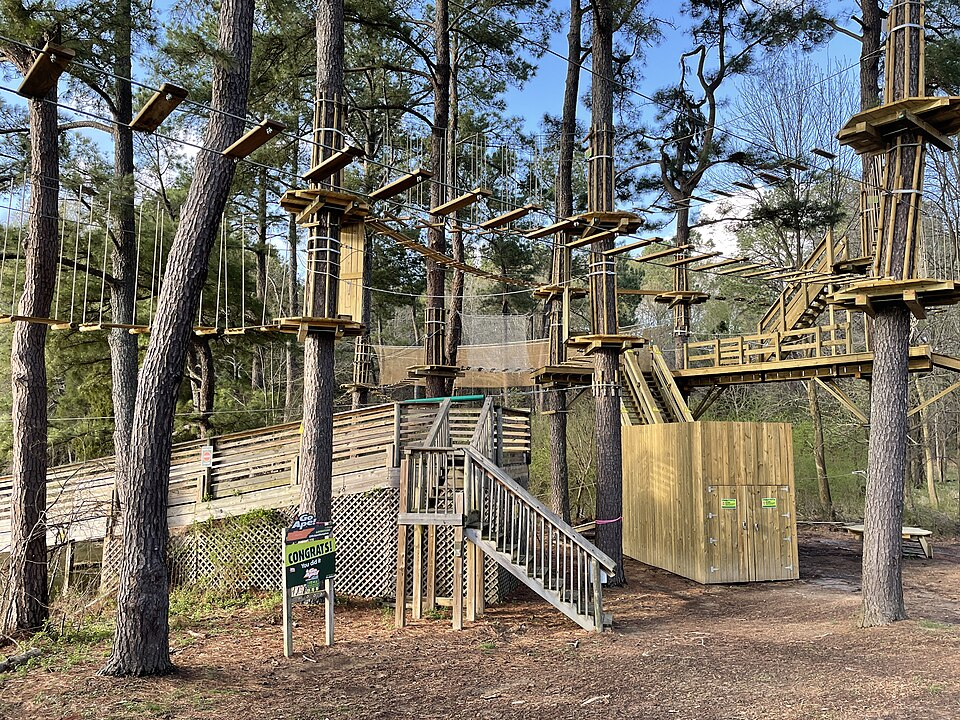
Devbhoomi Outdoor Adventure Park
Day adventure outside the park perimeter.
Zip-line, rope courses, wall climbing, rappelling, Burma bridge and camping for a lively outdoor luxury day out.

Starscapes Observatory Corbett
Luxury night sky immersion near Chocolate Room Café.
Stargazing, astrophotography, astronomy sessions and planet observation in darker skies outside the core safari zones.
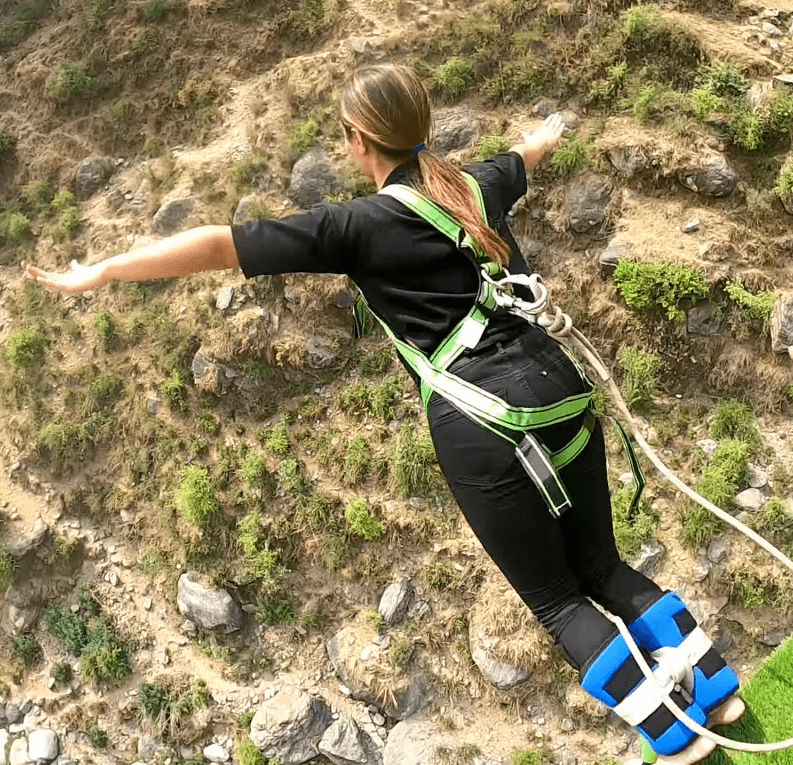
Falcon Drop – Freestyle Bungey
101m jump near Ramnagar/Garjiya area.
Premium adrenaline, giant swing and modern outdoor thrills. Book directly with the operator to confirm exact site, height and safety readiness.
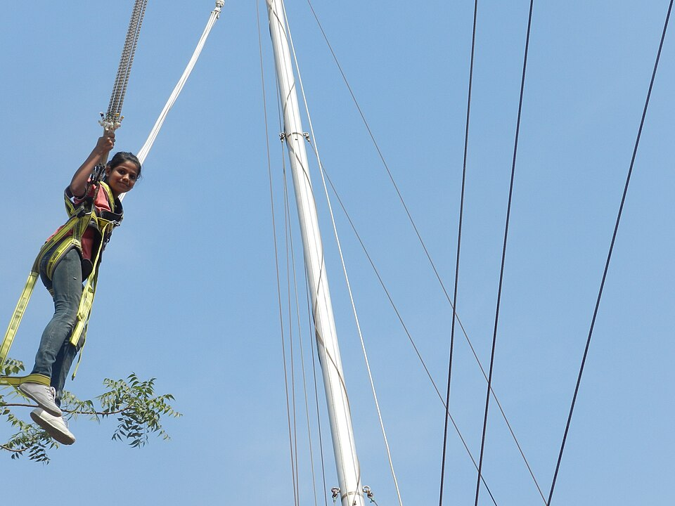
Panther Edge – Rooftop Bungey
104m rooftop jump recently promoted near Corbett.
Extreme adventure and premium adrenaline. Treat this as a private operator experience and verify details by calling ahead.
Riverside Camping
Luxury tents and calm Kosi river evenings.
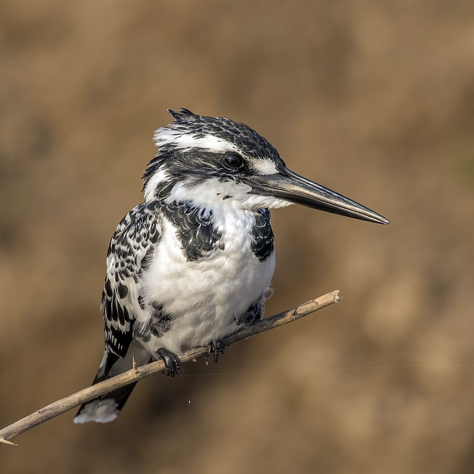
Birdwatching Escapes
Quiet mornings with local feathered life.
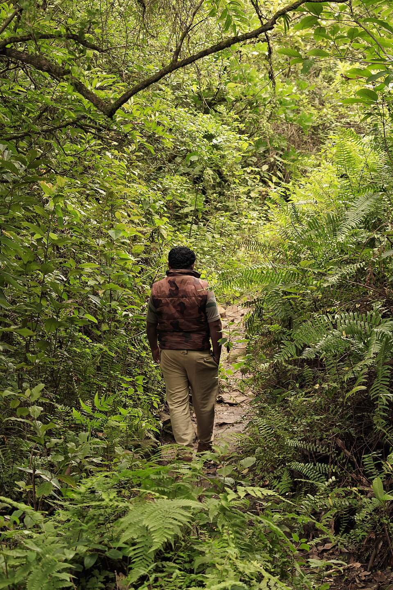
Nature Walks
Curated short hikes beside river and forest edge.
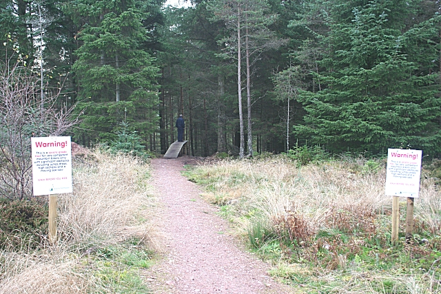
Cycling Trails
Easy luxury rides through village and riverside lanes.
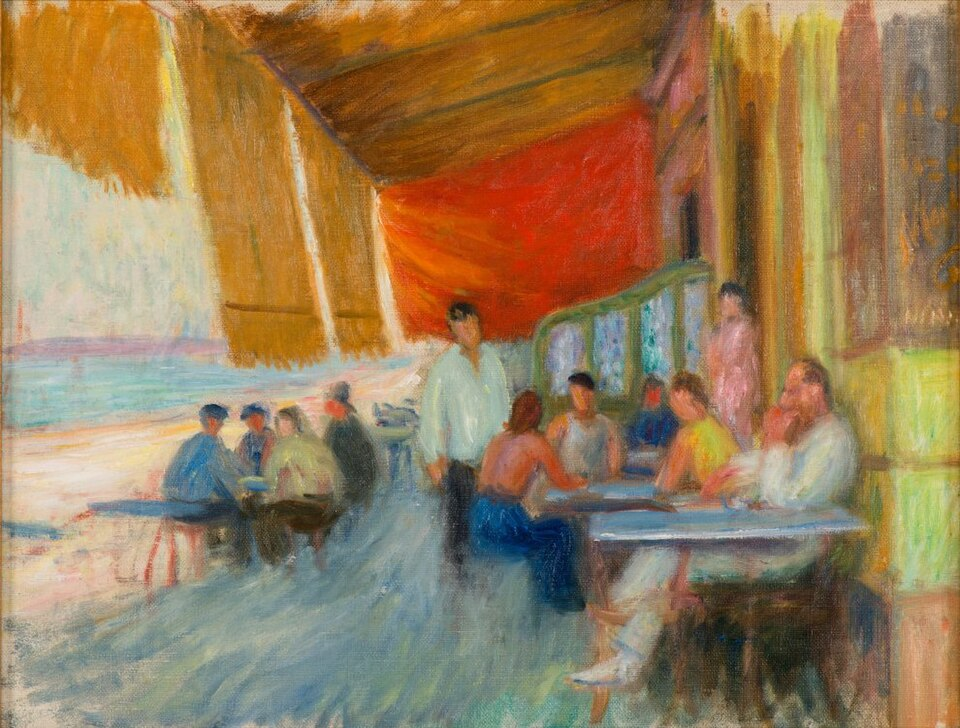
Forest-edge Cafés
Authentic cafés with river views and calm luxury.
Bonfire Evenings
Curated campfire nights with luxury lodge service.
Kosi River Picnics
Private riverside picnics and calm water escapes.
Outdoor Photography
Editorial nature moments along the river and hills.
Explore by Mood
Peaceful Nature
Photography
Romantic
Adventure
Hidden Gems & Secret Trails
Venture beyond the marked paths to discover Corbett's most intimate secrets. From the "Secret Whispering Trail" used by local conservationists to the silent orchid groves, these experiences are curated for the few who seek true sanctuary.
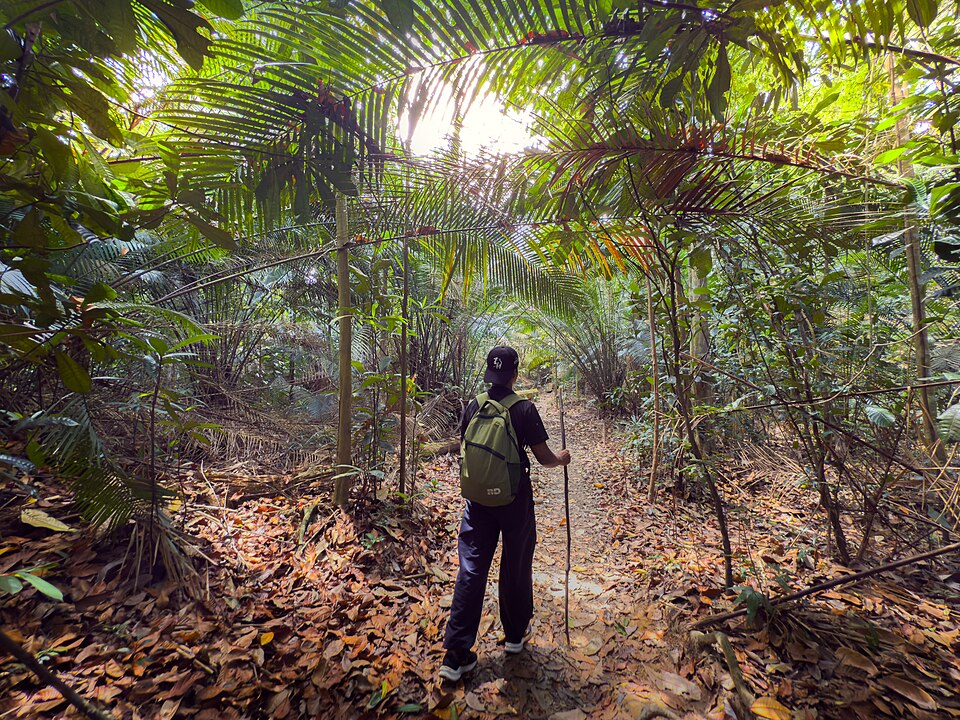
Surroundings
Corbett & Ramnagar Adventure Notes
Devbhoomi Outdoor Adventure Activity Park, Ramnagar is a day adventure park outside the Corbett zones. Typical activities include rope courses, zip-line, wall climbing, obstacle activities and similar adventure challenges; public listings do not reliably confirm bungee jumping here, so treat it as a general adventure park.
New / recent bungee jumping setups near Corbett are private, roof- or structure-based jumps in the Corbett–Ramnagar belt, with heights reported around 101–104 m in 2024–2025 posts. Operators market these as “one of the highest jumps in India,” but travelers must call the operator directly from phone numbers on those sites to confirm exact location and approach, height and safety standards, and operating status on the intended dates.
Night-sky / observatory experiences are becoming more visible around Corbett. A newly publicized astronomy initiative offers telescope-based stargazing and basic astronomy sessions from darker skies near the park. Many resorts and camps collaborate with such astronomy groups, so visitors can book “stargazing” or “astro nights” through the property or directly with the observatory provider.
Other non-safari adventure options in the wider Ramnagar–Corbett belt include seasonal river rafting and Kosi river activities, zip-lining, rappelling, rope courses, camping, bonfire nights, and indoor/outdoor games offered by various adventure camps and resorts.
Advice: shortlist 3–4 adventure camps or resorts from local directories such as “Adventure Sports in Ramnagar, Nainital” on Justdial. Then call each property to ask whether they offer bungee or only rope/zip-line/wall climbing, and whether they can arrange night-sky or telescope sessions.